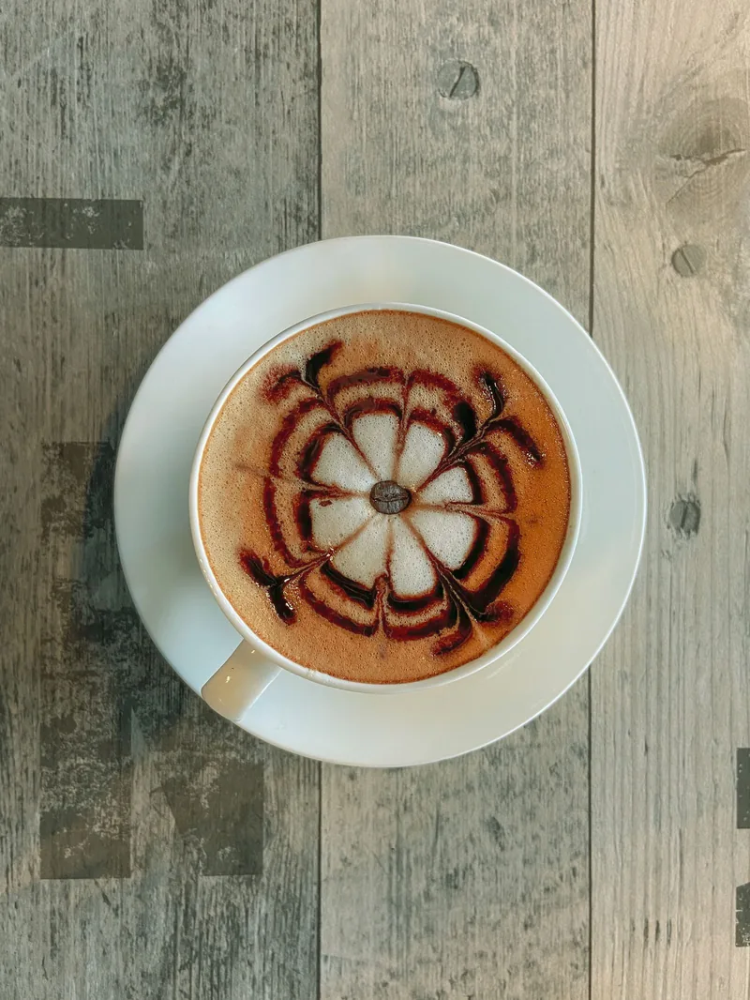

01
Coffee & drinks
The cup the café is known for — poured at the counter, not rushed.
- Cappuccinolatte art, steamed milk
- Café lattesmooth and milky
- Espressoshort and strong
- Cold coffeeiced, for hot Bahawalpur afternoons
- Hot chocolatefor the non-coffee table
- Tea & green teaby the cup or the pot